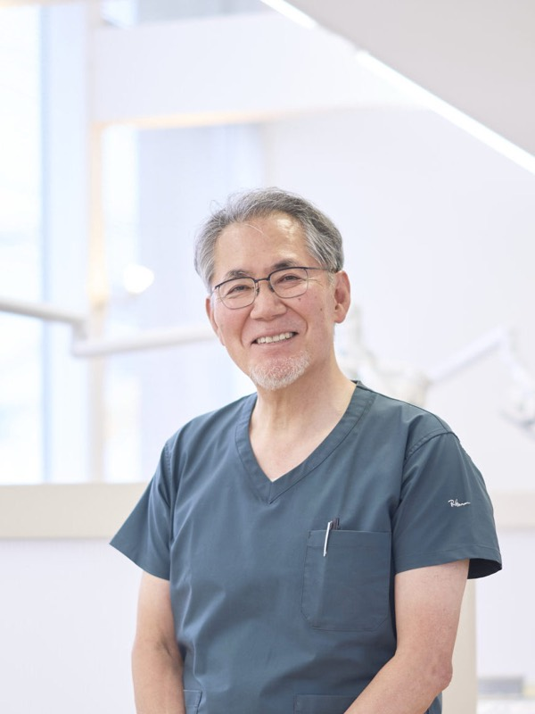
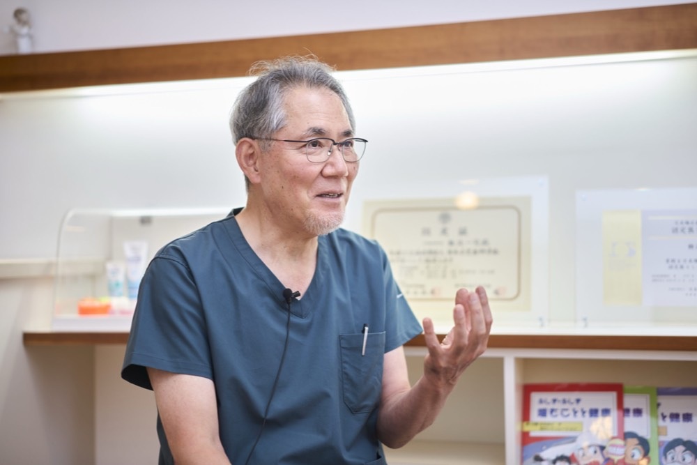
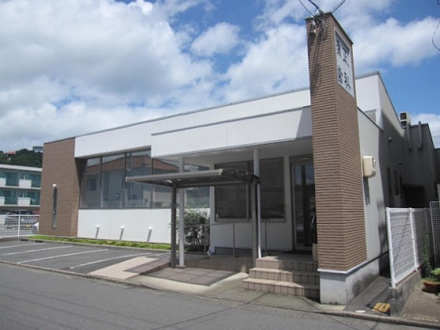
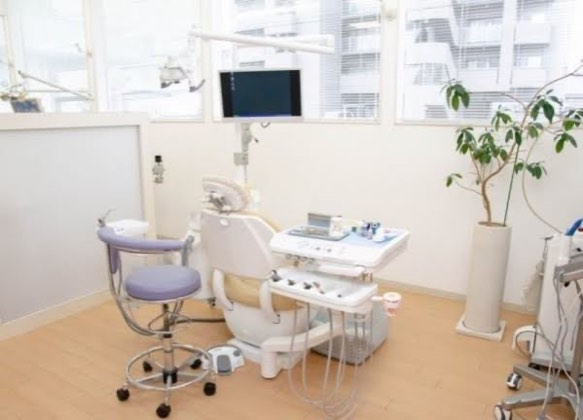
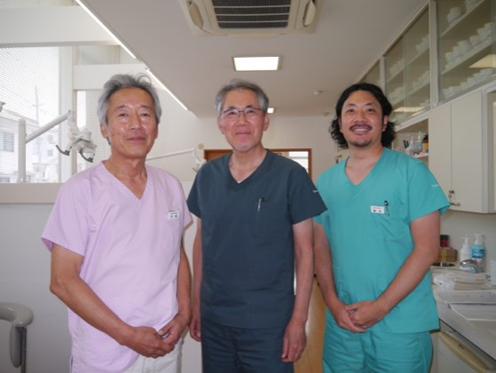
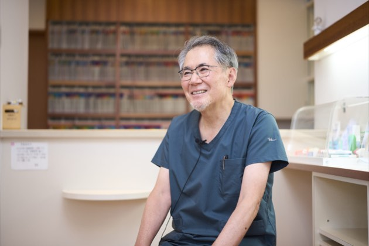
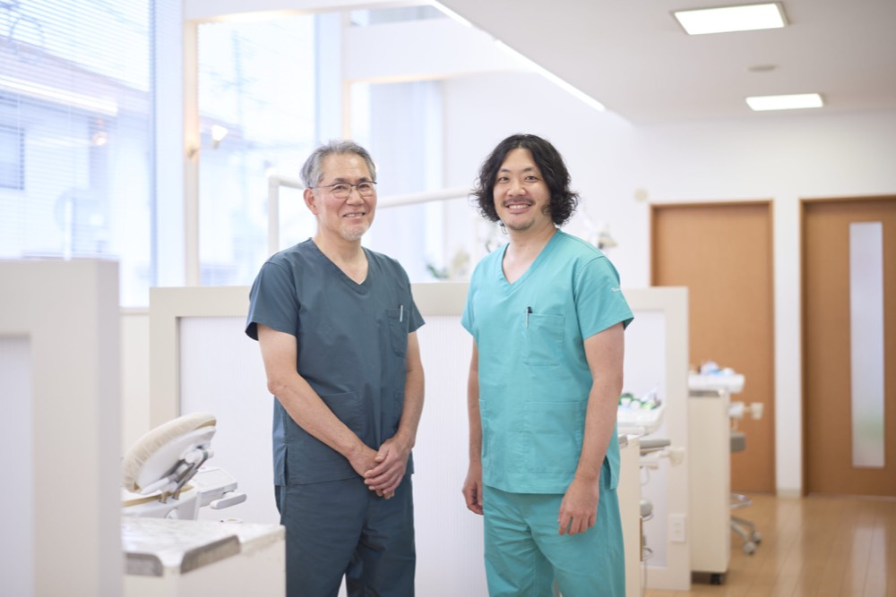

機能美を追求する なんば矯正歯科クリニックの挑戦
難波 一司kazushi nanba
なんば矯正歯科クリニック 院長
1959年生まれ。岐阜歯科大学卒業後、岡山大学歯学部口腔外科、新居浜市の救急病院を経て31歳で開業。その後、現在の地にクリニックを移転・法人化。神奈川歯科大学でも噛み合わせと矯正を学び直し機能性を重視した全顎治療を行う。
企業サイトを見るCHAPTER 01
口腔外科から矯正歯科への転身と歩み

Qなぜ歯科医師を志し、その中でも口腔外科や矯正歯科という専門分野を選ばれたのでしょうか。
A医療への憧れは幼少期から漠然と抱いていましたが、組織に縛られず直接的に人の役に立ちたいという想いがあり、歯科医師の道を選びました。岡山大学病院の口腔外科で研鑽を積み、救急病院勤務を経て31歳で開業しました。当初は急逝された先代のクリニックを継承する形でのスタートでしたが、より理想的な矯正治療を追求したいという想いから現在のクリニックへと移転・法人化いたしました。
Q一般的な歯科医院と、なんば矯正歯科クリニックの最大の違いや強みはどこにありますか。
A当院は矯正や噛み合わせの治療に特化していますが、単に歯並びを綺麗にするだけの場所ではありません。私自身が口腔外科で研鑽を積んできたため、治療の過程で生じる抜歯や外科的処置にもきっちり対応できる体制を整えています。また矯正治療だけでなく虫歯や歯周病、被せ物やインプラント治療も行っており、お口全体の健康を支える難しい治療にもすべて対応できる包括的な歯科医療が私たちの確固たる優位性です。
さらに私が小児歯科の専門医であるため小さなお子様からご高齢の方まで三世代に渡って通っていただくことができるのも、他の医院では見られない強みであると思っています。
CHAPTER 02
機能を追求する治療へのこだわりと強固なドクター体制
Q口腔外科から、さらに矯正や噛み合わせの分野を深く追究されるようになったきっかけを教えてください。
A医療の現実として歯並びを整える「矯正学」と、生理学的な営みを支える「咬合学」は往々にして別物と捉えられがちです。しかし、臨床の現場では、矯正治療を考慮しなければ根本的な機能改善に至らない症例に数多く直面してきました。どうしたものかと悩んでいた時、機能性を極限まで重視する神奈川歯科大学の元学長の矯正学に出会い、これこそが求めていた医療だと確信しました。すでに開業していましたが、同大学のポストグラデュエートコースを受講するため、週末を使って岡山から神奈川まで通い、5年間心血を注いで学びました。
この飽くなき探求プロセスが、現在の「審美性と機能性の両立」という当院の治療指針の礎となっています。
Qクリニックを支えるスタッフやドクターの体制について教えてください。
A現在は私と副院長、精度を高めるもう一人のドクターを含む10名体制です。副院長である私の息子には岡山大学病院の矯正科で徹底的にベーシックな知識と技術、最先端の知識と技術両方を学ばせました。私の機能的アプローチと息子の最先端の知識が融合することで、強固なシナジーが生まれています。そして当院には院長や副院長とは別に私の大学時代からの後輩であり、親友でもある素晴らしい口腔外科医が在籍しています。この心から信頼できるドクターがいてくれるからこそ多くの治療や非常に難しい治療に対してもすべて対応することができます。この強固な体制があるからこそどのような悩みを抱えた患者様に対しても常に最善の選択肢を提供し続けることが可能となっています。




CHAPTER 03
患者様に寄り添う医療と未来への展望

Q日々の診療の中で、患者様に対して最も大切にされている信念やこだわりは何でしょうか。
A自分の治療方針だけが正解だと思わず、患者様の多様なニーズに寄り添うことです。「これが良い」と押し付けるのではなく、幅広い可能性を提示し、納得して選んでいただくことを何よりも大切にしています。審美性はもちろん、人間が健康に生きていくための「機能性」を確実に盛り込んだ治療を、これからも世の中にたくさん届けていきたいです。また、地域医療への貢献として、長年にわたり学校歯科医や岡山市歯科医師会の役員を務め、学校歯科保健の充実に携わってしてきました。長年の地道な活動を評価され、表彰をいただいたことも私たちの大きな誇りであり、地域への感謝の原点になっています。
Q今後のクリニックとしての具体的な展望や、難波先生が描く将来の目標について教えてください。
A現在、マウスピース矯正が普及する一方で、治療の質に関するトラブルも一部懸念されています。だからこそ私たちは、矯正の基礎を学び、矯正治療に長年たずさわってきた専門の医師による「安全で質の高いマウスピース治療」を地域にお届けしたいと考えています。確かな知識と経験に基づいた安心の医療を提供することが私たちの使命です。